Ayarlar > Ağ Ayarları > İnternet Bağlantısı Ayarları (gelişmiş ayarlar)
İnternet Bağlantısı Ayarları (gelişmiş ayarlar)
Internet'e temel ayarlarla bağlanamıyorsanız, ayarlarınızı gerektiği gibi değiştirin. Belirli ağ ortamları için her öğeyi gerektiği gibi değiştirin.
1. |
|
|---|---|
2. |
[İnternet Bağlantısı Ayarları] öğesini seçin. |
3. |
[Özel] öğesini seçin. |
 (Ayarlar) >
(Ayarlar) >  (Ağ Ayarları) öğesini seçin.
(Ağ Ayarları) öğesini seçin.Bağlantı Yöntemi
Internet'e bağlanma yöntemini ayarlayın. Bu ayar yalnızca kablosuz LAN özelliğiyle donatılmış PS3™ sistemlerinde kullanılabilir.
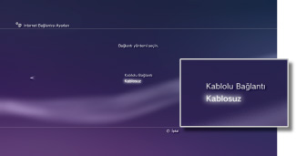
| Kablolu Bağlantı | Bir Ethernet kablosu kullanarak kablolu bir bağlantı kurun |
|---|---|
| Kablosuz | Kablosuz bir LAN yoluyla kablosuz bağlantı kurun |
WLAN Ayarları
Erişim noktasının SSID'sini ayarlayın. Bu ayar yalnızca kablosuz LAN özelliğiyle donatılmış PS3™ sistemlerinde kullanılabilir.
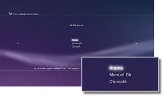
| Arama | Yakındaki erişim noktası için tarayın. Bu ayarı erişim noktasının SSID'sini bilmediğiniz zaman seçin. Sistem yakındaki erişim noktalarını algılar ve SSID ve güvenlik ayarları hakkında bilgiler görüntüler. |
|---|---|
| Manuel Gir | Bir klavye kullanarak SSID'sini manüel olarak girerek erişim noktasını belirtin. Bu ayarı SSID'yi bildiğiniz zaman seçin. |
| Otomatik | Erişim noktasının otomatik ayar özelliğini kullanın. Bu ayar yalnızca bu özelliği destekleyen PS3™ sistemlerinin satıldığı bölgelerde kullanılabilir. Bu ayarı otomatik kurulumu destekleyen bir erişim noktası kullanırken ayarlayın. Ekrandaki yönergeleri izleyin. |
WLAN Güvenlik Ayarı
Erişim noktası için bir şifreleme anahtarı ayarlayın. Bu ayar yalnızca kablosuz LAN özelliğiyle donatılmış PS3™ sistemlerinde kullanılabilir.
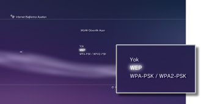
| Yok | Bir şifreleme anahtarı ayarlamayın. |
|---|---|
| WEP | Bir şifreleme anahtarı ayarlayın. Şifreleme anahtarı sonraki ekranda girilebilir. Şifreleme anahtarı bir dizi yıldız olarak görüntülenir. |
| WPA-PSK / WPA2-PSK |
Kimlik Doğrulama Ayarı
Bu ayarlar yalnızca Kore'de satılan PS3™ sistemlerinde bulunur ve yalnızca kablosuz LAN özelliğiyle donatılmış PS3™ sistemlerinde bulunur.
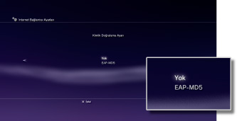
| Yok | Kimlik doğrulama bilgilerini ayarlamayın. |
|---|---|
| EAP-MD5 | Genel WLAN hizmetleri kullanırken kimlik doğrulama bilgilerini ayarlayın. Sonraki ekranda kullanıcı kimliğinizi ve parolanızı girin. Ayrıntılar için, genel WLAN hizmet sağlayıcının sağladığı bilgilere bakın. |
Ethernet Çalıştırma Modu
Ethernet veri aktarım hızını ve işlem yöntemini ayarlayın. Genellikle [Otomatik Algıla] öğesini seçin.
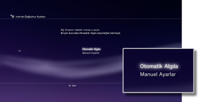
| Otomatik Algıla | Otomatik olarak temel ayarları ayarlayın. |
|---|---|
| Manuel Ayarlar | Ethernet veri aktarım hızını ve işlem yöntemini manüel olarak ayarlayın. |
IP Adresi Ayarı
Internet'e bağlanırken bir IP adresi alma yöntemini ayarlayın.
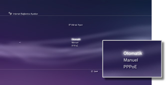
| Otomatik | DHCP sunucusunun ayırdığı IP adresini kullanın. Sonraki ekranda DHCP sunucusu ana bilgisayar adını girebilirsiniz. |
|---|---|
| Manuel | IP adresini manüel olarak ayarlayın. Sonraki ekranda IP adresi, alt ağ maskesi, varsayılan yönlendirici ve birincil ve ikincil DNS değerlerini girebilirsiniz. |
| PPPoE | Internet'e PPPoE kullanarak bağlanın. Sonraki ekranda kullanıcı kimliğinizi ve parolanızı girebilirsiniz. |
DHCP
DHCP ana bilgisayar adını ayarlayın. Genellikle [Ayarlama] öğesini seçin.
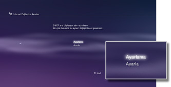
| Ayarlama | DHCP ana bilgisayar adını ayarlamayın. |
|---|---|
| Ayarla | DHCP ana bilgisayar adını ayarlayın. |
DNS Ayarı
DNS sunucusunu ayarlayın.
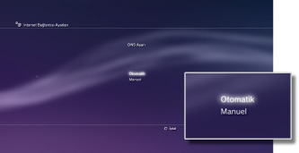
| Otomatik | Otomatik olarak DNS sunucusu adresini alın. |
|---|---|
| Manuel | Manüel olarak DNS sunucusu adresini alın. |
MTU
Verileri aktarırken kullanılan MTU değerini yapılandırın. Genellikle [Otomatik] öğesini seçin.
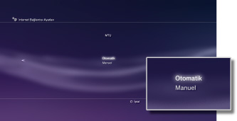
| Otomatik | Otomatik olarak MTU değerini ayarlayın. |
|---|---|
| Manuel | Bir aktarımda gönderilebilen maksimum veri paketi boyutunu (bayt olarak) belirtin. |
Proxy Sunucusu
Kullanılacak proxy sunucusunu ayarlayın.
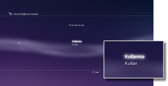
| Kullanma | Proxy sunucusu kullanmayın. |
|---|---|
| Kullan | Bir proxy sunucusu kullanın. Proxy sunucusu adresini ve bağlantı noktası numarasını sonraki ekranda girebilirsiniz. |
UPnP
UPnP (Evrensel Tak ve Çalıştır) öğesini etkinleştirin veya devre dışı bırakın.
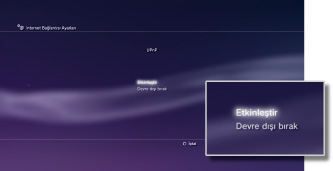
| Etkinleştir | UPnP'yi etkinleştirin. |
|---|---|
| Devre dışı bırak | UPnP'yi devre dışı bırakın. |
İpucu
[Devre dışı bırak] olarak ayarlanırsa, sesli / görüntülü sohbet özelliği veya oyunun iletişim özellikleri kullanılıyorken diğerleriyle iletişim kısıtlanabilir.